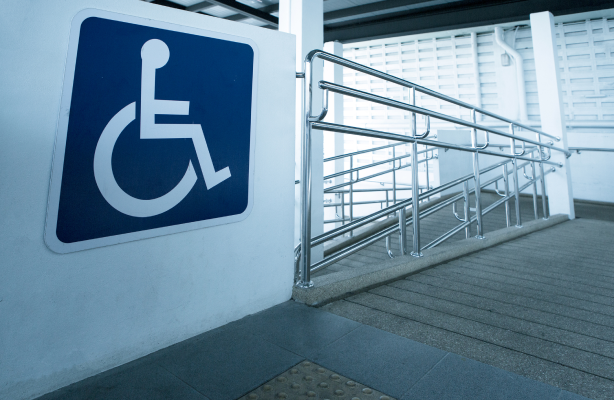

Our “classic” wall, also known as the “main wall”, is a large
climbing wall that suits all experience levels. The grades range
from 5 to 8. On the far-right side of the wall there are two “auto
belay” systems so that you can climb with a rope without being
belayed by another person. The wall is 10 to 13 meters high and 25
meters wide, making it the biggest climbing wall in Gjøvik.
Competition Wall
Our competition wall contains a steep overhang and cater to more
advanced climbers. Many regional cups are held at this very wall.
All routes on this wall are set by professional route-setters with
experience from national competitions and world cups. The wall is 15
meters high, and has about 20 routes with grades ranging from 6+ to
9. The wall is located between the bouldering wall an the classic
wall.
Bouldering Wall
The bouldering wall is the most popular of all our walls. Bouldering
is about climbing short routes without a rope and falling on padding
instead of being kept safe by a rope. It does not require any course
certification to do bouldering. This is why it is popular for first
timers. The bouldering wall has grades from 4+ to 7a/7b.
Disability Access
Accessing our facilities by wheelchair?
For physically impaired climbers, there are special entrances and an
elevator to get to the climbing walls. You will see the elevator to
your right-hand side when entering Fjellhallen. Our instructors are
available to assist you with anything you need, be it belaying or
specialized climbing gear.

Climbing should be enjoyed by everyone. Fjellhallen offers easy
access to anyone with, or without a physical disability.